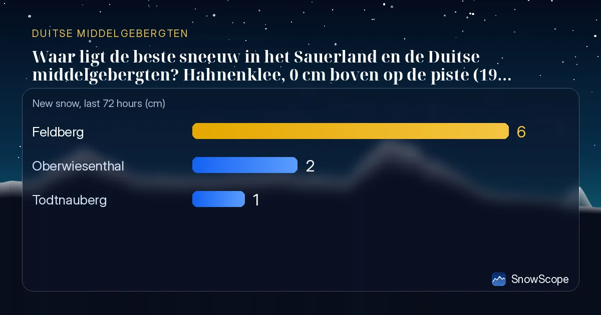

Waar ligt de beste sneeuw in het Sauerland en de Duitse middelgebergten? Hahnenklee, 0 cm boven op de piste (19 november)
Sneeuwcheck voor donderdag 19 november: 0 van 8 skigebieden in het Sauerland en de Duitse middelgebergten zijn boven wit, het diepst is Hahnenklee met 0 cm.
Bekijk de sneeuwverwachting voor Hahnenklee in de SnowScope-appSneeuwhoogte, alerts en de 3D-kaart, gratis.
Sneeuwhoogte per skigebied
De helft van de 8 skigebieden hier heeft boven meer dan 0 cm, de andere helft minder.
Daarna: Braunlage (0 cm), Feldberg (0 cm), Oberwiesenthal (0 cm) en Todtnauberg (0 cm).
| Skigebied | Sneeuwhoogte | Verse sneeuw, 72 u | Komende dagen | Top |
|---|---|---|---|---|
| Hahnenklee | 0 cm | 0 cm | 0 cm | 725 m |
| Feldberg | 0 cm | 6 cm | 29 cm | 1.446 m |
| Braunlage | 0 cm | 0 cm | 1 cm | 817 m |
| Oberwiesenthal | 0 cm | 2 cm | 7 cm | 1.211 m |
| Winterberg | 0 cm | 0 cm | 0 cm | 809 m |
| Todtnauberg | 0 cm | 1 cm | 15 cm | 1.374 m |

Per skigebied
Braunlage: 0 cm boven op de piste (hoogste lift 817 m), 0 cm verse sneeuw in 72 uur, tot en met 22 november nog 1 cm.
Feldberg: 0 cm boven op de piste (hoogste lift 1.446 m), 6 cm verse sneeuw in 72 uur, tot en met 22 november nog 29 cm.
Hahnenklee: 0 cm boven op de piste (hoogste lift 725 m), 0 cm verse sneeuw in 72 uur, tot en met 22 november nog 0 cm.
Oberwiesenthal heeft boven 0 cm; de liften gaan tot 1.211 m. Verse sneeuw: 2 cm in drie dagen, verwachting 7 cm tot en met 22 november.
Verse sneeuw, laatste 72 uur
De laatste drie dagen brachten Feldberg 6 cm, Oberwiesenthal 2 cm en Todtnauberg 1 cm.
Sneeuw onderweg
Tot en met 22 november geeft de verwachting Feldberg 29 cm, Todtnauberg 15 cm en Oberwiesenthal 7 cm.
Tip voor een korte trip
Meeste sneeuw voor je geld bij twee skidagen: Feldberg, met nu 0 cm en tot en met 22 november nog 29 cm erbij.
Met de auto ben je vanuit Nederland in drie tot vier uur in het Sauerland en in ongeveer tien uur in Tirol; vertrek vroeg om de files bij de tunnels voor te zijn.
Naast de piste
De basis is nog dun: off-piste is het risico voor je ski's nog niet waard. Gletsjers en de hoogste liften zijn de veilige keuze.
Aan het begin van het seizoen is de laag dun, echt skiën kan vooral bij de hoogste liften en op de gletsjers.
Tips voor skiërs
- Begin vroeg: na een koude nacht is de sneeuw in de eerste uren het best.
- Winterbanden of sneeuwkettingen voor de laatste kilometers naar de hoge skigebieden.
- Off-piste alleen na het lezen van het lawinebulletin.
About these numbers
Resort snow depths are the deepest snow on the resort's upper slopes on the date shown; they are estimates for an area, not a measurement at one point. Forecasts can change. Always read the official avalanche bulletin before going off-piste.
Cite this report
For research, teaching or the press: the numbers and charts are free to reuse under CC BY 4.0 with this citation.
SnowScope (2026), Waar ligt de beste sneeuw in het Sauerland en de Duitse middelgebergten? Hahnenklee, 0 cm boven op de piste (19 november), https://snowscope.app/blog/nl/2026/11/sneeuw-sauerland-winterberg-19-november-2026.html, accessed 2026-11-19
SnowScope (Atlas Labs). (2026, November 19). Waar ligt de beste sneeuw in het Sauerland en de Duitse middelgebergten? Hahnenklee, 0 cm boven op de piste (19 november). SnowScope snow reports. https://snowscope.app/blog/nl/2026/11/sneeuw-sauerland-winterberg-19-november-2026.html
BibTeX
@misc{snowscope2026sneeuwsauerlandwinterber,
author = {{SnowScope (Atlas Labs)}},
title = {Waar ligt de beste sneeuw in het Sauerland en de Duitse middelgebergten? Hahnenklee, 0 cm boven op de piste (19 november)},
year = {2026},
month = nov,
howpublished = {\url{https://snowscope.app/blog/nl/2026/11/sneeuw-sauerland-winterberg-19-november-2026.html}},
note = {Published 2026-11-19 12:03 UTC; accessed 2026-11-19}
}· CC BY 4.0 · Methods, data and tools →
Hahnenklee: snow and temperature by height, this winter vs last (tools) →
Follow Hahnenklee
Gratis: een bericht als er verse sneeuw komt, en elke ochtend de verwachting.